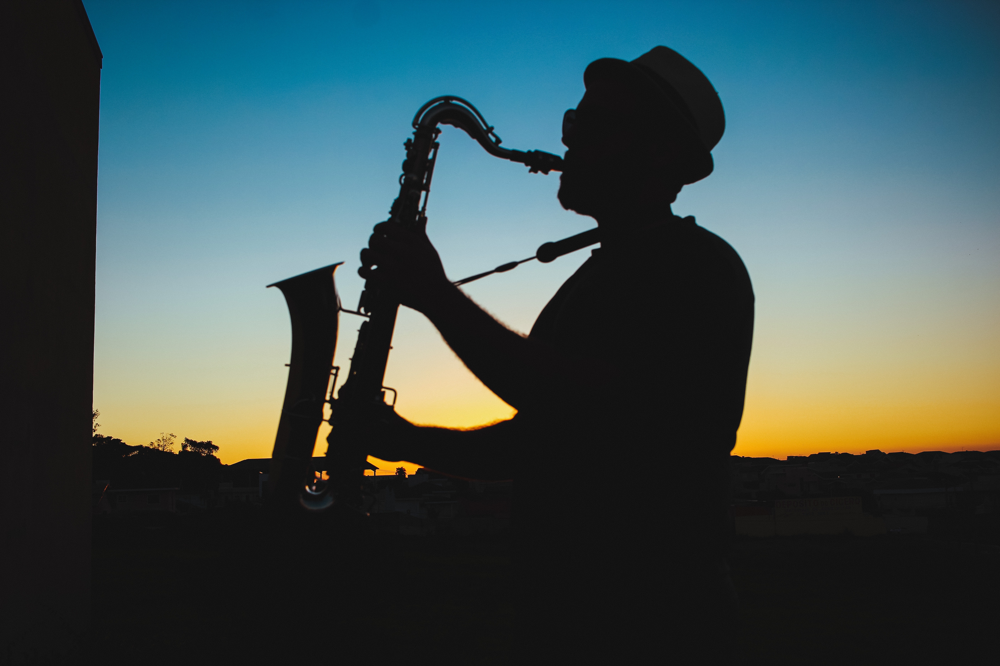

Music is the art of combining vocal and instrumental sounds and making something to express emotion, connect with people and entertain people. Music has been a part of humans since the dawn of civilization. Music doesn't affect linguistic barriers as anyone can enjoy music. From the ancient beats of drums music has evolved so much in the present. There are multiple genres of music that represents various cultures of the world and different eras of the history including pop, jazz, hiphop, Rock, Country music, Electronic music etc...
Jazz is a fascinating and imrovisational musical genre that was developed in early 20th century American cultural melting pot. This vouches for the limitless innovativeness of the human creativity expression. Jazz was originally originated from the New Orleans making one of the most enjoyable experiences of the music history.
The history of jazz is a story of resilience and transformation. Jazz was spreading like wildfire winning people's hearts all over the world. Jazz made it all the way from New Orleans to the center of crowded cities like New York and Chicago and got the chance to spread evenmore with the help of record labels. Jazz is not a type of music that is completely composed or predetermined. It has used a variety of unique strategies throughout practically all of it's history. Overall jazz is a unique form of musical expression.
Jazz continued to grow as a genre giving birth to a couple of sub-genres as well incluisng swing, cool jazz, fusion and bebop. This made made jazz grow even more attracting new audiences and artists to continue exploring it's limitlessness.
Following are some Jazz music legends of the history of Jazz music
Jazz exists in many forms. It can be relaxing, upbeat, fast, slow, etc... The good jazz music can take the listener to a different time and place and make the listener have an unforgettable experience. Following are some Jazz music festivels people can attend all arouund the world.